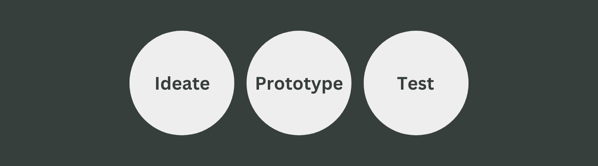

Chat
UI DESIGN / UX DESIGN
My Role
UI/UX DesignerDuration
3 weeksTools
Figma, Photoshop, Illustrator, Lucidchart, Paper & PencilOverview

Design Process

With a focus on UI for this project, the steps I covered in my
design process included user flows, sketching, wireframing, style guides, and prototyping.
Objective
Wireframe

Style Guide

Finished Screen

Mockups

Prototype